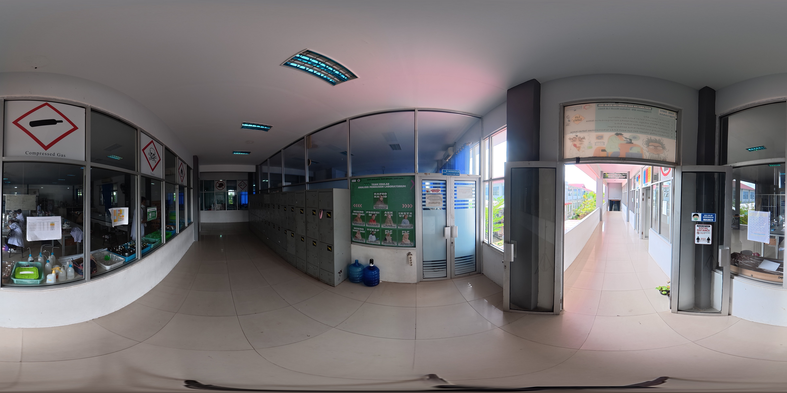

APL
Selasar APL
Selamat Datang
Gunakan kursor di tengah layar untuk berinteraksi dengan objek dan berpindah antar lokasi.
×
Ketuk peta untuk memperbesar

Selasar APL
Gunakan kursor di tengah layar untuk berinteraksi dengan objek dan berpindah antar lokasi.
